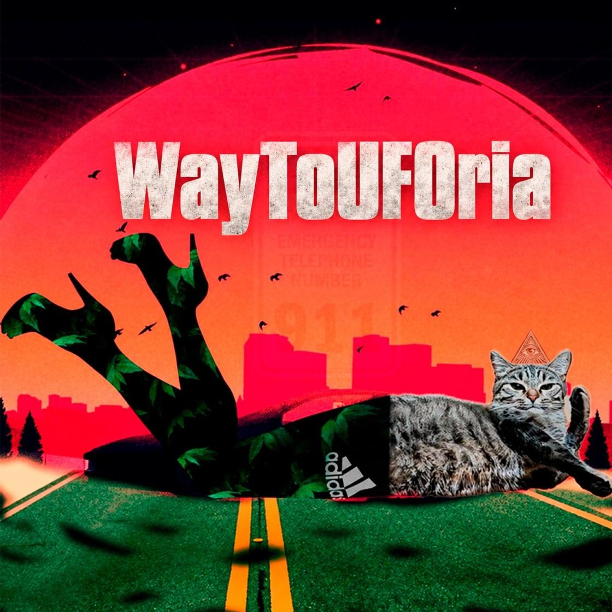

TFD777
Alexander Shcherbakov · Techno Producer
Hard techno · Hypnotic
-- Official Release --

WayToUFOria
ListenTFD777 (ТФД777) — проект Александра Щербакова из Нижнего Новгорода: хард-техно и гипнотик. «WayToUFOria» — официальный релиз, он доступен на Яндекс Музыке, VK Музыке, в Звуке, KION, Deezer, Spotify и на SoundCloud.
* Принадлежит компании Meta, признанной экстремистской организацией и запрещённой на территории РФ.